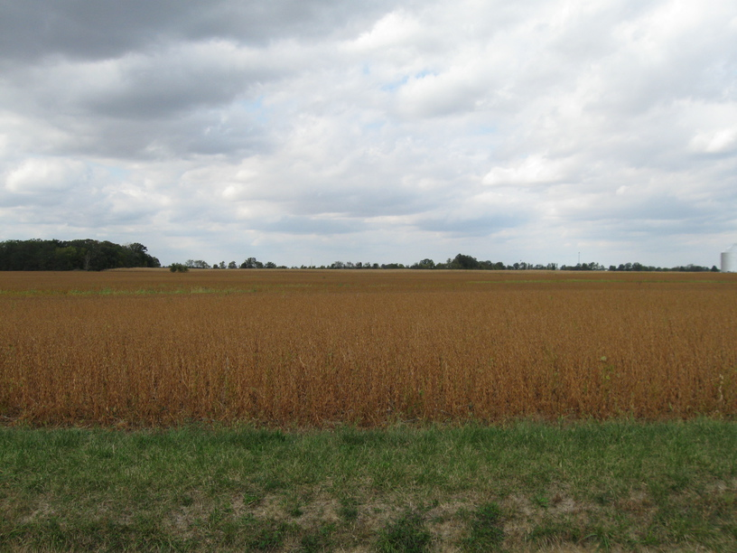
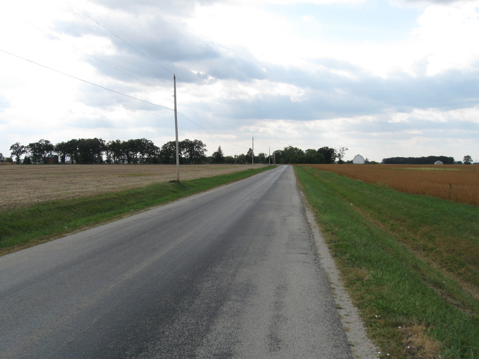
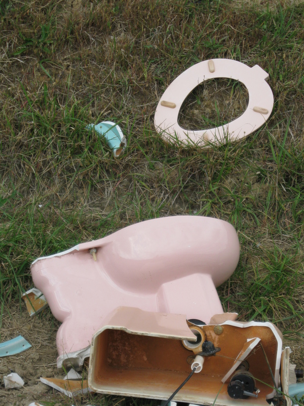

3 Oct 08, near Cedarville, OH
Getting back on the bike after a week's rest at home was less comfortable than I had anticipated. I've got more pain in my knees, butt, elbows, and, most oddly, leg muscles, than I ever had on my way between BAL & CMH. (With the exception of my knees on 9/25 after way too much hard climbing on 9/24.) My new gears are nice & low, but they're not as nice & smooth as the old set. They're also definitely spread out more. I went from a 12-25 10-speed cassette to an 11-34 9-speed, so I've got a slightly higher high gear in addition to my much lower low gear, and with fewer steps in between. It's worth it, though.
Didn't meet anyone today, although the Ohio to Erie Trail is very nice (paved!). Not many people were out today—but tomorrow is Sat., so that should make it more busy.


